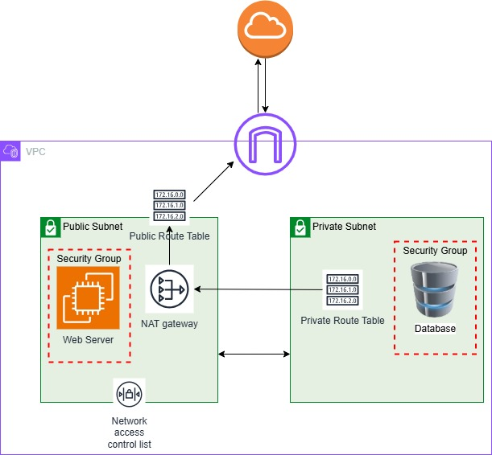

This document provides the steps to create a VPC with a private and public
subnet. The goal is to configure the VPC network to allow internet access
for a Web Server deployed inside a publicly exposed subnet and a Database
Server in a private subnet while maintaining proper security controls.

Goal:
Enable internet access with proper security controls to allow internet
access while maintaining protection of the private subnet. Attach an
Internet Gateway, update NACLs, Security Groups, and route tables.
The current configuration to fix includes a VPC with two subnets: a public
and private subnet. The Web Server is deployed inside the public subnet
and the database is deployed in the private subnet.
Step 1: Attach the Internet Gateway
Search and click on Internet Gateway. Click on Create Internet
Gateway.
Name the Internet Gateway. Then click Create. However, it is not
attached to the VPC. Must attach it.
To attach Internet Gateway, click on Actions, then select Attach to
VPC and select the VPC with name of your VPC.
Step 2: Set the route table for the Web Server in the public subnet
In the AWS console, search for EC2.
Click on EC2, then click on Instances in the right side column.
Click on the details of the Web Server instance.
Select the Networking tab.
Click on the Subnet ID. It will open a new table with the subnet in
that VPC.
Checkmark the box with the subnet and click on the Route table tab.
Click on the route table with the link of the name that contains the
web server subnet.
Edit the route table and add route with Destination: 0.0.0.0/0 and
Target: Internet Gateway.
The public subnet is now reachable from the internet
Step 3: Add a NAT Gateway
The NAT gateway should reside in the public subnet, not the private
subnet. Then, create a route table in the private subnet to route
traffic to the NAT gateway. An elastic IP address is required to associate
the private subnet with the NAT Gateway.
Navigate to your VPC, then in the left navigation pane, select Elastic
IPs.
Click on Allocate Elastic IP address
Leave the default settings unless you want to change the Region. Then
click Allocate to get the new IP.
Go back to your VPC and in the left navigation pane, select NAT
Gateways
Click on Create NAT Gateway
Choose the Public Subnet where you want the NAT Gateway to reside
(note: it must have a route to the Internet Gateway)
Associate the Elastic IP (EIP), then click Create NAT Gateway
Go to the route table in the private subnet to point internet traffic
to the NAT gateway -> Go to VPC, then select Route Tables in the left
navigation pane.
Select the Route table in the private subnet and click Edit Routes,
then Add Route
Set the Destination: 0.0.0.0/0 and Target: NAT Gateway.
Click Save
This configuration routes the traffic from the private subnet to the NAT
Gateway in the public subnet, which then sends the traffic to the
Internet Gateway. This setup allows secure internet access without
exposing the private subnet to incoming internet traffic.
Step 4: Create a Security Group
Security Groups are virtual firewalls that control inbound and outbound
traffic at the EC2 instance level. By default, a security group denies
all inbound traffic and allows all outbound traffic.
Security Groups perform stateful packet filtering meaning that when an
outbound request is made, the firewall remembers the connection such
that when the response comes back, it is automatically allowed, even if
there is no explicit inbound rule for it.
Security Groups can only have allow rules, and rules can be based in IP
addresses or other Security Groups.
These steps show how to change the security group for the public subnet
containing the web server so that it may receive web requests from the
internet.
In the left navigation pane, select Security groups.
In the Basic details section, locate the Security group name and enter
Web Security Group. Description: Enable HTTP access from anywhere.
Choose the VPC you want the security group to be associated with.
Add a rule to the security group to allow inbound web requests from
anywhere. For Inbound rules, select Add rule. For Type: HTTP; for
Source: Anywhere-IPv4; Description: Allow web requests from anywhere.
Then click Create security group.
Recall, since security groups are stateful, we only need to create
an inbound rule instead of specifying both an inbound and outbound
rule
By default, the Security group for the private subnet denies all
inbound traffic, but you may follow the same steps if you would like
to add other rules such as SSH access on port 22.
Step 5: Create a Network Access Control List (NACL)
NACL (Network ACL) is a firewall that controls traffic to and from a
subnet. It can have allow and deny rules.
The rules can only include IP addresses.
Is stateless meaning that return traffic must be explicitly allowed by
rules.
By default, each AWS account includes a default Network ACL. By default,
the NACL will allow all inbound and outbound traffic. You can modify the
list by adding your own rules, such as an explicit deny rule.
To modify the NACL rules:
In the left navigation pane, select Network ACLs.
Select the default Network ACL ID associated with the subnets you wish
to modify.
Click on Inbound rules and Edit inbound rules to make changes
Can edit the inbound rules to allow only traffic from HTTP on port
80 or HTTPS on port 443, or allow SSH on port 22.
Can repeat the process with clicking on the Outbound rules and
clicking Edit outbound rules.
Customizing NACLs provides an extra layer of security and fine-grained
control over network traffic.